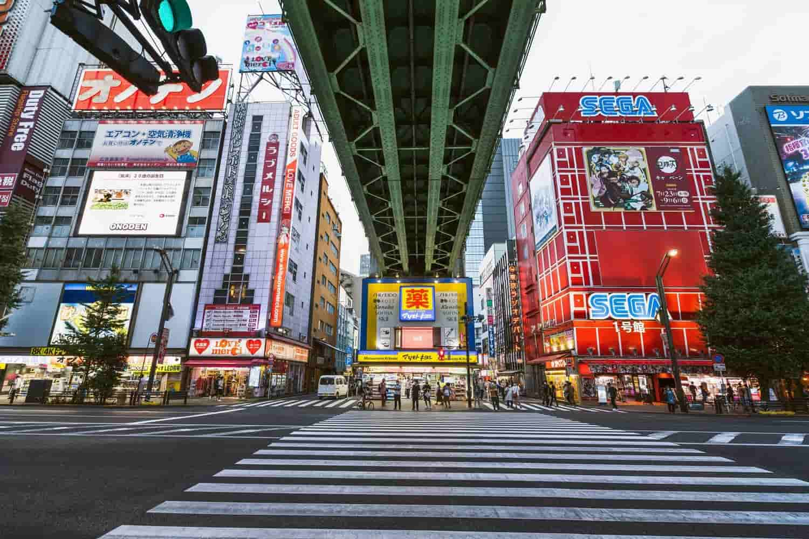
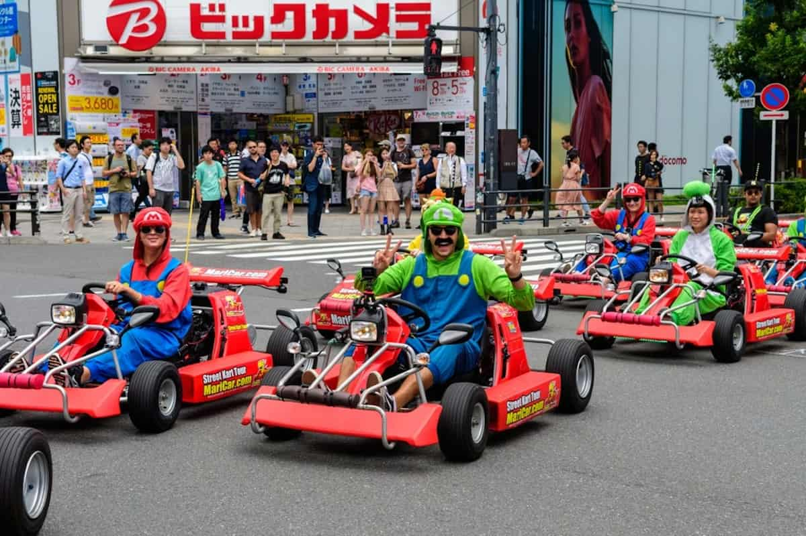

Bubble Pop Culture
Japan is known for its unique culture, rich history, and vibrant pop culture. However, many of the popular travel sites and tourist attractions in Japan are often misrepresented in media and pop culture, leading to misconceptions and misunderstandings about the country. Contrary to popular belief, Japan is not just about anime, manga, and technology. It is a country with a deep cultural heritage, stunning natural beauty, and a rich history that goes back thousands of years. And yet every year millions of tourists flock to Japan, often with preconceived notions about what they will find there, only to be disappointed or surprised by the reality of the country, much to the annoyance of the people who live and work there. This has resulted in a sense of resentment towards tourists (better known as "gaijin" in Japan), especially those who are perceived as disrespectful or ignorant of Japanese culture and customs. And while the people are often view as welcoming and hospitable, they are in fact often disparaging towards foreigners. Allow us to provide a more accurate and comprehensive guide to traveling in Japan, highlighting the best travel services, tourist traps to avoid, and cultural etiquette to be aware of.

Travel Services
Traveling to another country can be a daunting experience, especially if you are unfamiliar with the language, culture, and customs of the destination. Not to mention the logistics of transportation, accommodation, and sightseeing can be overwhelming for travelers who are not used to navigating a foreign country. In Japan, there are many travel services available to help make your trip easier and more enjoyable. From transportation to accommodation to guided tours, there are a variety of options to choose from. However, it is important to do your research and choose reputable and reliable services that will provide you with a positive experience. In this section, we will highlight some of the best travel services in Japan that can help you navigate the country and make the most of your trip.
Tourist Traps
Japan has no shortage of tourist attractions, from ancient temples and shrines to modern shopping districts and entertainment venues. However, not all of these attractions are worth visiting, and some may even be considered "tourist traps" that are designed to exploit tourists for profit. These attractions may be overcrowded, overpriced, and underwhelming, and can often lead to disappointment and frustration for tourists who are expecting a more authentic and enjoyable experience. Sometimes the attractions themselves are not the problem, but rather the crowds of tourists that flock to them, which can make it difficult to fully appreciate and enjoy the experience. As you travel further into the country, you will find that there are many hidden gems and off-the-beaten-path attractions that are often overlooked by tourists, but can provide a much more authentic and enjoyable experience.


Etiquette in Japan
Unfortunately, many tourists who visit Japan are often unaware of the cultural norms and etiquette that are expected of them while they are in the country. This can lead to misunderstandings and even offense, as well as a negative perception of tourists in general. In some cases it can even lead to confrontations and altercations between tourists and locals, which can be embarrassing and damaging for both parties, and in others it can lead to an outright ban on tourists in certain areas. Even if you are not directly involved in any incidents, the actions of other tourists can still reflect poorly on you and contribute to a negative perception of tourists in general. It is important to be aware of the cultural norms and etiquette in Japan, and to make an effort to respect and adhere to them while you are in the country.
